24h Astro
Le ciel de votre journée, d'un coup d'œil. Voir sur Connect IQ
L'anneau · Le centre · Paramètres · Montres
L'anneau
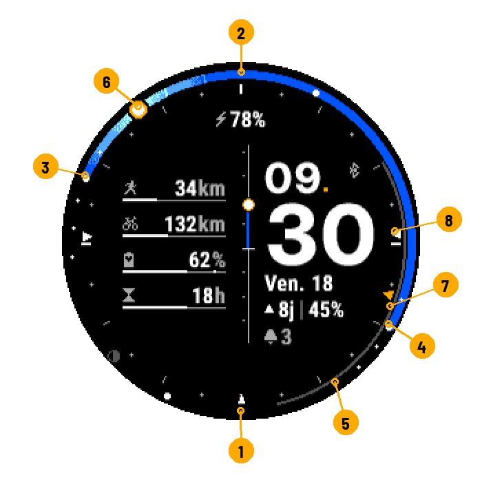
- Minuit
- Midi
- Lever du soleil
- Coucher du soleil
- Nuit noire
- Le soleil, maintenant
- Arc de la lune
- Boussole : direction du lever
Un tour = 24 h. La partie colorée va du lever au coucher ; sa couleur suit le ciel du moment. Gros points : lever, coucher, midi et minuit solaires. Petits points : crépuscules et fin de l'heure dorée.
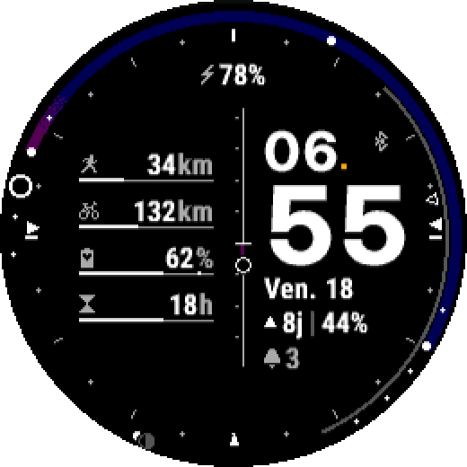
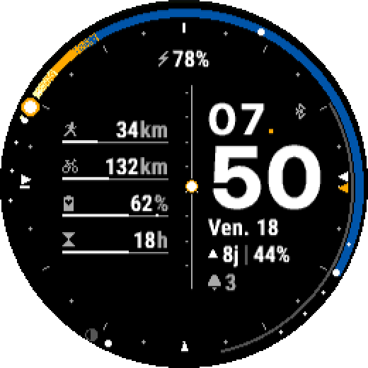
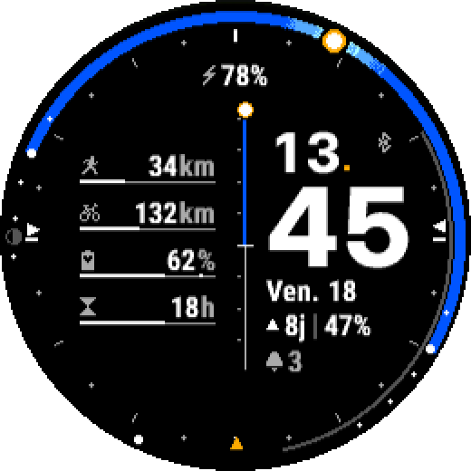

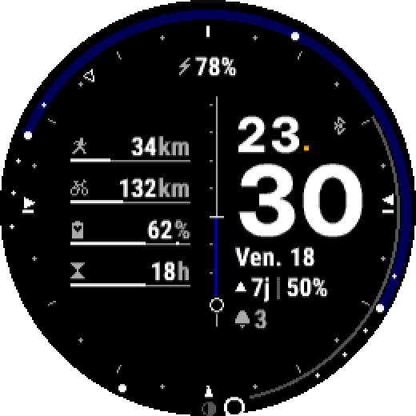
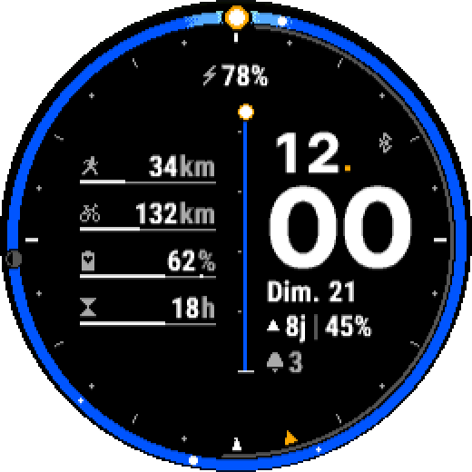
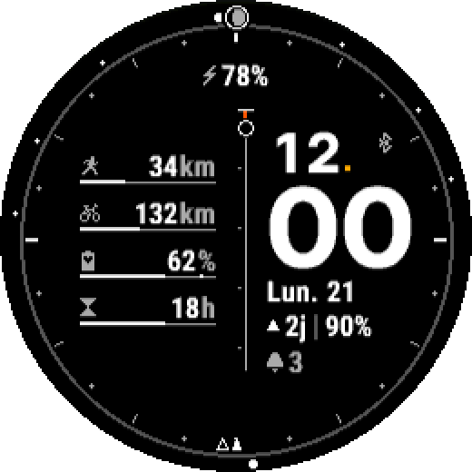
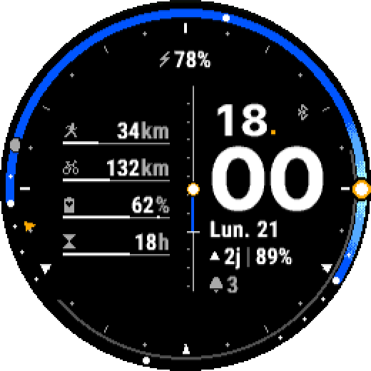
La lune
Arc gris de son lever à son coucher ; disque à sa phase, en haut de l'anneau quand elle est levée, en bas sinon.
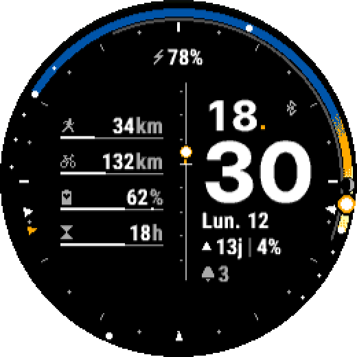
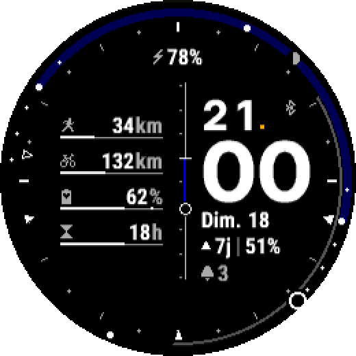
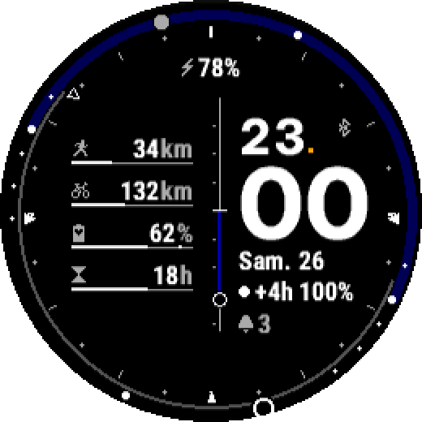
La boussole
Triangles sur les graduations, comme une carte (nord en haut) : directions du lever et du coucher, position actuelle de l'astre, sud en bas.
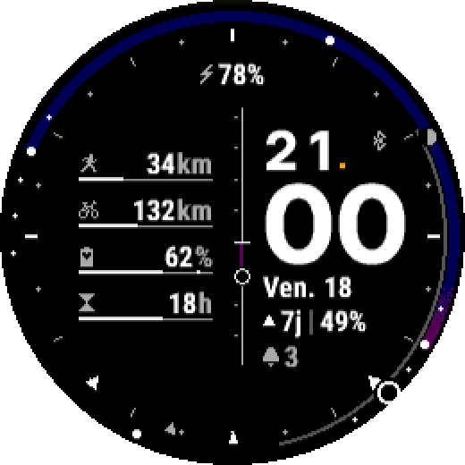
Le centre
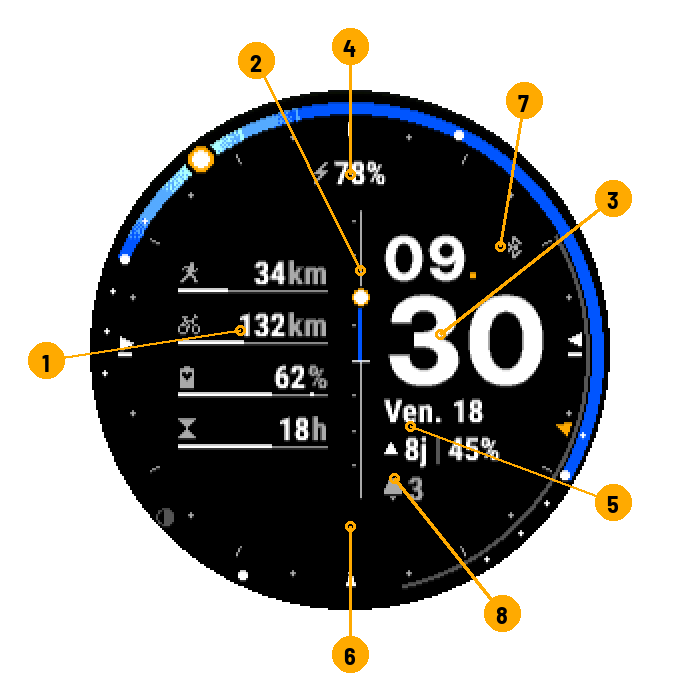
- Jauges
- Barre centrale
- Heure
- Champ du haut
- Lignes sous les minutes
- Champ du bas (vide par défaut)
- Bluetooth, position
- Notifications
Les jauges
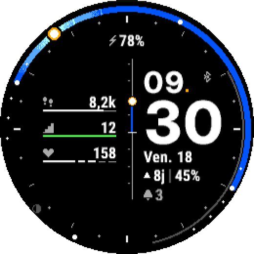
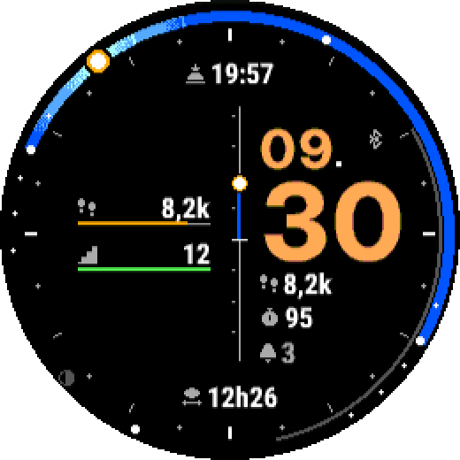
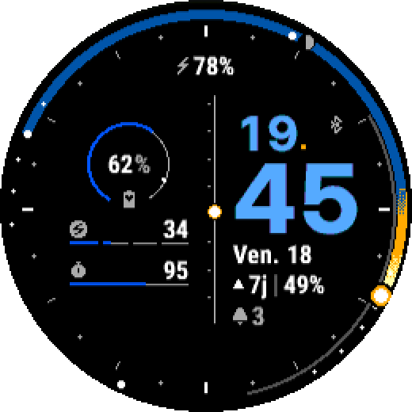
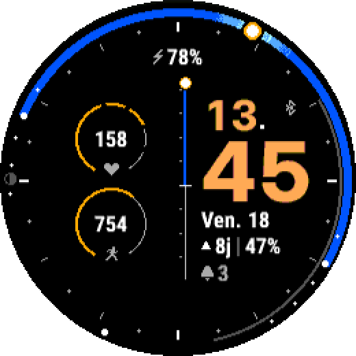
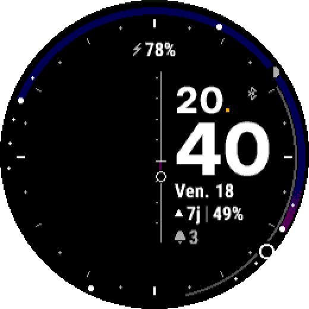
 |
Sport | Distance, durée ou séances ; semaine, mois ou année ; objectif réglable. |
 |
Body Battery | Trait blanc = maximum du jour. |
 |
Récupération | Heures restantes ; « Go. » = récupéré. |
 |
Pas | Vers l'objectif de la montre. |
 |
Étages | Vers l'objectif de la montre. |
 |
Minutes intensives | Semaine, vers l'objectif de la montre. |
 |
Fréquence cardiaque | Par zones ; rouge en zone 5. |
 |
Stress | 0 à 100 ; rouge dès 75. |
Verte : objectif atteint. Rouge : alerte. Piste grise seule ou « -- » : donnée indisponible (selon le modèle).
La barre centrale
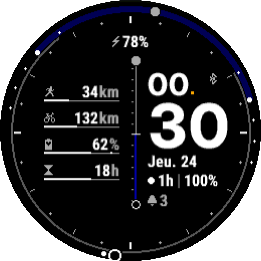
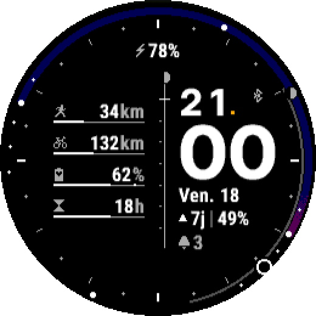
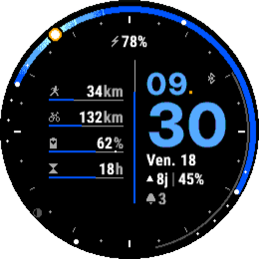
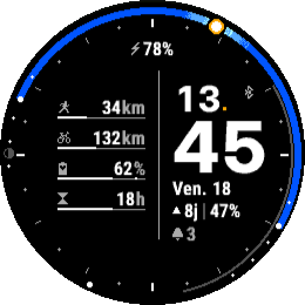
Trait blanc : l'horizon.
Les champs
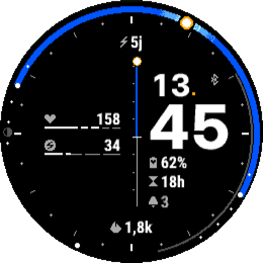
Ligne lune : ▲ 8j │ 47% = pleine lune dans 8 jours, 47 % éclairée ; ▼ vers la nouvelle lune ; ● / ○ pleine / nouvelle lune proche ; +4h = passée depuis 4 h.
La barre d'état
 téléphone connecté (gris foncé : non connecté) ·
téléphone connecté (gris foncé : non connecté) ·  aucune position : calcul pour Paris ·
aucune position : calcul pour Paris ·  en charge ·
en charge ·  notifications
notifications
Thèmes et ciel
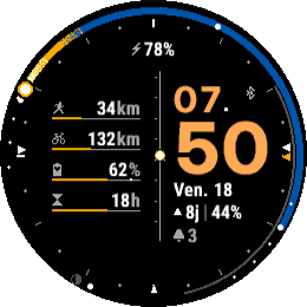
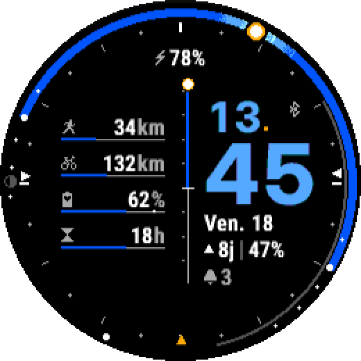
Paramètres
Dans l'appli Connect IQ ou Garmin Connect du téléphone.
Page principale
| Réglage | Choix | Par défaut |
|---|---|---|
| Disposition de la colonne gauche | 4 barres, 3 barres, 1 anneau + 2 barres, 2 barres, 2 anneaux, Aucune | 4 barres |
| Séparateur central | Élévation du soleil, Élévation du soleil et de la lune, Élévation de la lune, Batterie, Barre simple | Élévation du soleil |
| Thème | Classique, Soleil, Azur | Classique |
| Dégradés du ciel | Tramés, Paliers nets | Tramés |
| Lune sur le cadran 24 h (arc et disque) | Oui / Non | Oui |
| Boussole sur les graduations (azimuts) | Aucune, Soleil, Lune | Soleil |
| Position manuelle (au lieu du GPS) | Oui / Non | Non |
Jauges 1 à 4
Sport, mesure, période et objectif ne servent que pour la donnée Sport. Seules les jauges utilisées par la disposition s'affichent.
| Réglage | Choix | Par défaut (1 / 2 / 3 / 4) |
|---|---|---|
| Donnée | Sport, Récupération, Body Battery, Pas, Minutes intensives, Étages, Fréquence cardiaque, Stress | Sport / Sport / Body Battery / Récupération |
| Sport | Tous sports, Course, Vélo, Marche, Randonnée, Natation, Vélo électrique, Ski de fond, Aviron, Roller, Paddle, Kayak, Raquettes | Course / Vélo / Tous sports / Tous sports |
| Mesure | Distance, Durée, Séances | Distance / Distance / Distance / Distance |
| Période | Semaine, Mois, Année | Mois / Mois / Mois / Mois |
| Objectif | 0 – 100000 | 100 / 300 / 0 / 0 |
Coordonnées
Utilisées seulement si la position manuelle est activée.
| Réglage | Choix | Par défaut |
|---|---|---|
| Latitude | -90 – 90 | 48,8567 |
| Longitude | -180 – 180 | 2,3508 |
Champs de texte
Contenu des quatre champs autour de l'heure.
| Réglage | Choix | Par défaut |
|---|---|---|
| Champ haut / Champ bas / Ligne 1 (sous les minutes) / Ligne 2 | Vide, Batterie (%), Batterie (jours), Date, Lune, Prochain lever / coucher, Durée du jour, Pas, Étages, Minutes intensives, Calories, Fréquence cardiaque, Body Battery, Stress, Récupération, Notifications | Batterie (%) / Vide / Date / Lune |
Barre d'état et batterie
| Réglage | Choix | Par défaut |
|---|---|---|
| État du Bluetooth | Oui / Non | Oui |
| Nombre de notifications | Oui / Non | Oui |
| Seuil de batterie basse (%) | 1 – 99 | 20 |
Avancé
| Réglage | Choix | Par défaut |
|---|---|---|
| Échelle de la jauge de récupération (heures) | 6 – 168 | 48 |
Montres
Enduro™ 3 · fēnix® 6 / 6 Solar / 6 Dual Power · fēnix® 6 Pro / 6 Sapphire / 6 Pro Solar / 6 Pro Dual Power / quatix® 6 · fēnix® 6X Pro / 6X Sapphire / 6X Pro Solar / tactix® Delta Sapphire / Delta Solar / Delta Solar - Ballistics Edition / quatix® 6X / 6X Solar / 6X Dual Power · fēnix® 7 / quatix® 7 · fēnix® 7 Pro · fēnix® 7 Pro - Solar Edition (no Wi-Fi) · fēnix® 7S · fēnix® 7S Pro · fēnix® 7X / tactix® 7 / quatix® 7X Solar / Enduro™ 2 · fēnix® 7X Pro · fēnix® 7X Pro - Solar Edition (no Wi-Fi) · fēnix® 8 Solar 47mm · fēnix® 8 Solar 51mm / tactix® 8 Solar 51mm · fēnix® 9 Pro Solar 47mm · fēnix® 9 Pro Solar 51mm · Forerunner® 255 · Forerunner® 255 Music · Forerunner® 255s · Forerunner® 255s Music · Forerunner® 955 / Solar
Pour les curieux : le ciel, comment ça marche.